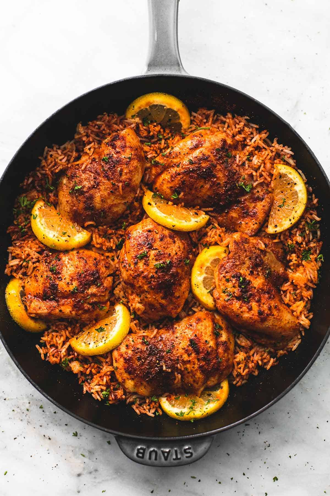

Chicken and rice
Back to all recipes

Description
Easy one pan Spanish chicken and rice is made with simple seasoning that come together with zesty bold flavors in this one pot, 30 minute meal.
This meal will take about 5 minutes to prep and 25 minutes to cook.
Ingredients
- 4 boneless skinless chicken breasts - OR 6 chicken thighs
- 3 tablespoons vegetable or canola oil
- 1 cup uncooked white rice
- 2 1/4 cups low sodium chicken broth
- 1 lemon
- chopped cilantro or parsley - for garnish
Spanish seasoning mix
- 2 teaspoons smoked paprika
- 1 teaspoon garlic powder
- 1 teaspoon salt
- 1 teaspoons ground cumin
- 1 teaspoon chili powder
- 1 teaspoon coriander - (see note)
- 1/4 teaspoon Italian seasoning
Steps
- In a small bowl whisk together all ingredients for the Spanish seasoning mix. Divide in half and set aside. Cut the lemon in half, then thinly slice one half - for garnish - and reserve the other half for juicing later in the recipe.
- Place chicken in a medium bowl. Drizzle with 2 tablespoons oil, then toss to coat well. Use half of the prepared seasoning mix to rub on both sides of each piece of chicken.
- Drizzle a large skillet with remaining 1 tablespoon of oil and bring to medium heat. Cook chicken for 2-3 minutes on each side until browned. Transfer to a plate. (It won't be cooked through at this point)
- Add rice, chicken broth, juice from 1/2 of the lemon, and remaining seasoning mix and stir to combine. Return chicken to the pan on top of the rice. Cover and cook for 20-25 minutes until liquid is absorbed, rice is tender, and chicken is cooked through.
- Garnish with lemon slices and freshly chopped cilantro or parsley and serve immediately
Notes
Coriander is found in the spice section of any typical grocery store. In a pinch, cumin can be used as a substitute.
Back to all recipes